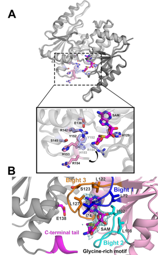

rlmH (PP_4808; UniProt Q88DL7) encodes Ribosomal RNA large subunit methyltransferase H, a small SAM-dependent SPOUT/alpha-beta-knot RNA methyltransferase (EC 2.1.1.177). It catalyzes N3-methylation of a pre-existing pseudouridine in 23S rRNA, generating 3-methylpseudouridine (m3Psi) at the conserved site (Psi1915 in E. coli numbering), located in helix 69 near the intersubunit interface/decoding region. RlmH is among the smallest SPOUT enzymes, lacking a separate RNA-recognition domain, and functions as a homodimer that assembles a composite, asymmetric active site across the two subunits. It preferentially modifies the assembled 70S ribosome rather than naked rRNA, requires prior pseudouridylation (by RluD) of its target uridine, and acts late in large-subunit ribosome biogenesis. It is a cytosolic, ribosome-associated enzyme. No primary experimental literature specific to P. putida KT2440 was retrieved; the functional assignment for Q88DL7 rests on strong conservation of the bacterial RlmH family and direct characterization of homologs (notably E. coli RlmH/YbeA).
| GO Term | Evidence | Action | Reason |
|---|---|---|---|
|
GO:0005737
cytoplasm
|
IEA
GO_REF:0000120 |
KEEP AS NON CORE |
Summary: The cytoplasm annotation is correct for RlmH. As a soluble bacterial rRNA methyltransferase that acts on ribosomal particles, RlmH carries out its function in the cytosol; this is consistent with conserved-homolog evidence describing RlmH as a cytosolic, ribosome-associated enzyme.
Reason: Location is accurate but non-core; the defining feature of RlmH is its catalytic activity, not its cellular compartment. Cytosolic localization is expected for a ribosome-modifying SPOUT methyltransferase.
Supporting Evidence:
file:PSEPK/rlmH/rlmH-uniprot.txt
SUBCELLULAR LOCATION: Cytoplasm
file:PSEPK/rlmH/rlmH-deep-research-falcon.md
RlmH is expected to be a **cytosolic, ribosome-associated enzyme**
|
|
GO:0006364
rRNA processing
|
IEA
GO_REF:0000002 |
MARK AS OVER ANNOTATED |
Summary: This rRNA processing annotation is in the right area but less specific than the methylation process already captured by GO:0031167. RlmH does not cleave or trim rRNA; it installs a single methyl group on a pre-existing pseudouridine, so the more specific rRNA methylation / modification term is preferable.
Reason: GO:0031167 (rRNA methylation), also present in GOA, directly captures the modification process. RlmH performs a post-transcriptional base modification on the assembled ribosome rather than rRNA processing/maturation cleavage steps.
Supporting Evidence:
file:PSEPK/rlmH/rlmH-deep-research-falcon.md
catalyzes **N3-methylation of a pre-existing pseudouridine in 23S rRNA**
file:PSEPK/rlmH/rlmH-deep-research-falcon.md
Requires prior Ψ:** pseudouridylation precedes methylation; RlmH modifies Ψ, not U
|
|
GO:0008168
methyltransferase activity
|
IEA
GO_REF:0000002 |
MARK AS OVER ANNOTATED |
Summary: This generic methyltransferase parent is over-annotated for RlmH. The specific activity is captured by GO:0070038 (rRNA (pseudouridine-N3-)-methyltransferase activity), also present in GOA, which precisely matches the characterized reaction (SAM-dependent N3-methylation of pseudouridine in 23S rRNA, EC 2.1.1.177).
Reason: GO:0070038 captures the exact rRNA pseudouridine N3-methyltransferase activity and should be preferred over the high-level parent term.
Supporting Evidence:
file:PSEPK/rlmH/rlmH-uniprot.txt
EC=2.1.1.177
file:PSEPK/rlmH/rlmH-deep-research-falcon.md
SAM)–dependent **SPOUT/αβ-knot** RNA methyltransferase
|
|
GO:0031167
rRNA methylation
|
IEA
GO_REF:0000104 |
ACCEPT |
Summary: rRNA methylation is the correct biological process for RlmH. The enzyme specifically methylates pseudouridine 1915 (E. coli numbering) in 23S rRNA to form m3Psi, contributing to the broader pathway of ribosome biogenesis/rRNA maturation, acting late during large-subunit maturation after prior pseudouridylation by RluD.
Reason: RlmH installs a methyl group on a specific 23S rRNA residue, the textbook definition of rRNA methylation, supported by direct characterization of conserved homologs.
Supporting Evidence:
file:PSEPK/rlmH/rlmH-uniprot.txt
Specifically methylates the pseudouridine at position 1915
file:PSEPK/rlmH/rlmH-deep-research-falcon.md
RlmH participates in the broader pathway of **ribosome biogenesis and rRNA maturation**, acting **late** during large-subunit maturation
|
|
GO:0070038
rRNA (pseudouridine-N3-)-methyltransferase activity
|
IEA
GO_REF:0000104 |
ACCEPT |
Summary: RlmH-specific rRNA pseudouridine N3-methyltransferase activity is the core molecular function. UniProt assigns EC 2.1.1.177 and the Rhea reaction converting pseudouridine(1915) in 23S rRNA + SAM to N3-methylpseudouridine(1915) + SAH. Direct characterization of the E. coli homolog (RlmH/YbeA) confirms SAM-dependent site-specific transfer of a methyl group converting Psi1915 to m3Psi on the assembled 70S ribosome.
Reason: The activity precisely matches the characterized reaction chemistry and substrate specificity of the conserved bacterial RlmH family; this is the defining molecular function of the gene product.
Supporting Evidence:
file:PSEPK/rlmH/rlmH-uniprot.txt
Specifically methylates the pseudouridine at position 1915
file:PSEPK/rlmH/rlmH-uniprot.txt
EC=2.1.1.177
file:PSEPK/rlmH/rlmH-deep-research-falcon.md
converts Ψ1915 to 3‑methylpseudouridine (m3Ψ) via a site-specific transfer of a methyl group from SAM
file:PSEPK/rlmH/rlmH-deep-research-falcon.md
RNA target:** helix 69 of 23S rRNA at the conserved Ψ1915 site
|
Q: Does RlmH-dependent m3Psi1915 modification affect KT2440 ribosome performance, fidelity, or stress tolerance under environmental conditions relevant to P. putida?
Q: Is the late-acting, RluD-dependent two-step modification pathway (pseudouridylation then N3-methylation) of helix 69 conserved in P. putida, and does loss of rlmH alter large-subunit assembly timing?
Experiment: Construct a P. putida KT2440 rlmH (PP_4808) knockout, map 23S rRNA m3Psi modification by mass spectrometry to confirm loss of the mark, and compare growth/translation phenotypes (including under stress) to wild type.
Type: rRNA modification mapping and translation phenotype assay
Experiment: Test substrate-context dependence by assaying recombinant P. putida RlmH activity on naked 23S rRNA versus assembled 70S ribosomes, and on pseudouridine- versus uridine-containing helix 69 substrates, to confirm the assembled-ribosome and prior-Psi requirements seen in homologs.
Type: in vitro methyltransferase kinetics with defined substrates
The research report should be a detailed narrative explaining the function, biological processes, and localization of the gene product. Citations should be given for all claims.
You should prioritize authoritative reviews and primary scientific literature when conducting research. You can supplement
this with annotations you find in gene/protein databases, but these can be outdated or inaccurate.
We are specifically interested in the primary function of the gene - for enzymes, what reaction is catalyzed, and what is the substrate specificity? For transporters, what is the substrate? For structural proteins or adapters, what is the broader structural role? For signaling molecules, what is the role in the pathway.
We are interested in where in or outside the cell the gene product carries out its function.
We are also interested in the signaling or biochemical pathways in which the gene functions. We are less interested in broad pleiotropic effects, except where these elucidate the precise role.
Include evidence where possible. We are interested in both experimental evidence as well as inference from structure, evolution, or bioinformatic analysis. Precise studies should be prioritized over high-throughput, where available.
UniProt accession Q88DL7 from Pseudomonas putida KT2440 is annotated as ribosomal RNA large subunit methyltransferase H (RlmH), an S-adenosyl‑L‑methionine (SAM)–dependent SPOUT/αβ-knot RNA methyltransferase (EC 2.1.1.177) that catalyzes N3-methylation of a pre-existing pseudouridine in 23S rRNA (commonly referred to as m3Ψ1915 in E. coli numbering). The available primary mechanistic literature is largely from E. coli and other bacteria; however, the enzyme family/function is strongly conserved and aligns with the UniProt family/domain assignment for Q88DL7 (koh2017smallmethyltransferaserlmh pages 1-2, purta2008ybeaisthe pages 1-2, popova2024completelistof pages 31-33).
Important limitation: in the retrieved full-text set, no paper directly studying P. putida KT2440 PP_4808/Q88DL7 was obtained; therefore, organism-specific phenotypes and regulation in P. putida are not experimentally supported here and are presented only as conserved-function inference (purta2008ybeaisthe pages 1-2, koh2017smallmethyltransferaserlmh pages 1-2).
Key sources used in this report:
- Purta et al. 2008-08. RNA. “YbeA is the m3Ψ methyltransferase RlmH that targets nucleotide 1915 in 23S rRNA.” https://doi.org/10.1261/rna.1198108 (purta2008ybeaisthe pages 1-2, purta2008ybeaisthe pages 3-4)
- Koh et al. 2017-04. Scientific Reports. “Small methyltransferase RlmH assembles a composite active site to methylate a ribosomal pseudouridine.” https://doi.org/10.1038/s41598-017-01186-5 (koh2017smallmethyltransferaserlmh pages 1-2, koh2017smallmethyltransferaserlmh pages 2-3)
- Narayan et al. 2023-09. Biochemistry. “RNA Post-transcriptional Modifications of an Early-Stage Large-Subunit Ribosomal Intermediate.” https://doi.org/10.1021/acs.biochem.3c00291 (narayan2023rnaposttranscriptionalmodifications pages 10-12)
- Popova et al. 2024-05. bioRxiv. “Complete list of canonical post-transcriptional modifications in the Bacillus subtilis ribosome and their link to RbgA driven large subunit assembly.” https://doi.org/10.1101/2024.05.10.593627 (popova2024completelistof pages 25-31, popova2024completelistof pages 31-33)
- Haft et al. 2014-06. PNAS. “Correcting direct effects of ethanol on translation and transcription machinery confers ethanol tolerance in bacteria.” https://doi.org/10.1073/pnas.1401853111 (haft2014correctingdirecteffects pages 7-8)
RlmH (historically annotated as YbeA in E. coli) is a bacterial 23S rRNA modification enzyme that installs 3-methylpseudouridine at a conserved site in the large-subunit rRNA (koh2017smallmethyltransferaserlmh pages 1-2, purta2008ybeaisthe pages 1-2). It belongs to the SPOUT (SpoU-TrmD) superfamily of SAM-dependent methyltransferases and is unusual in being among the smallest SPOUT enzymes, lacking an additional RNA-recognition domain (koh2017smallmethyltransferaserlmh pages 1-2).
Reaction (canonical):
- Substrate: 23S rRNA containing pseudouridine (Ψ) at the target site in helix 69 (H69).
- Cofactor: SAM (methyl donor).
- Product: m3Ψ (N3-methylpseudouridine) at that site.
- Enzyme class: EC 2.1.1.177.
Koh et al. describe RlmH as “the bacterial 23S rRNA N3-methyltransferase that converts Ψ1915 to 3‑methylpseudouridine (m3Ψ) via a site-specific transfer of a methyl group from SAM,” and emphasize that it acts on the assembled ribosome and does not methylate neighboring pseudouridines (koh2017smallmethyltransferaserlmh pages 1-2). Purta et al. genetically identify ybeA/rlmH as responsible for the methylation at nucleotide 1915 of 23S rRNA and classify it as a SAM-dependent SPOUT-family methyltransferase (purta2008ybeaisthe pages 1-2, purta2008ybeaisthe pages 3-4).
Dependency on prior pseudouridylation: the modification is a two-step pathway where uridine is first isomerized to Ψ (by RluD) and then methylated by RlmH; this requirement is explicitly supported in recent assembly-timing studies (popova2024completelistof pages 31-33, narayan2023rnaposttranscriptionalmodifications pages 10-12).
RlmH adopts the SPOUT “overhand-knot” α/β fold and functions as a homodimer. A key mechanistic concept is that the enzyme assembles a composite, asymmetric active site across the dimer, in which:
- one monomer contributes the SAM-binding pocket, and
- the partner monomer’s C-terminal tail contributes residues essential for catalysis (koh2017smallmethyltransferaserlmh pages 1-2, koh2017smallmethyltransferaserlmh pages 5-7).
This composite active-site architecture is shown in the structural panels retrieved from Koh et al. (koh2017smallmethyltransferaserlmh media ba365767, koh2017smallmethyltransferaserlmh media d46266e4, koh2017smallmethyltransferaserlmh media 0ac60c2b).
Catalytically important residues and ribosome binding surface: Koh et al. identify conserved residues (e.g., E138, R142, Y152, H153, R154) as essential for catalysis and/or ribosome binding, and propose a positively charged patch as an rRNA interaction surface (koh2017smallmethyltransferaserlmh pages 2-3, koh2017smallmethyltransferaserlmh pages 5-7).
In bacteria, rRNA modification enzymes such as RlmH act in the cytosol on ribosomal particles. A strong mechanistic constraint is that RlmH preferentially recognizes the assembled 70S ribosome rather than naked rRNA under tested conditions (koh2017smallmethyltransferaserlmh pages 1-2, koh2017smallmethyltransferaserlmh pages 5-7). Purta et al. further propose (based on docking) that RlmH binds near the ribosomal A site at the 30S–50S interface to position SAM adjacent to the target nucleotide (purta2008ybeaisthe pages 1-2).
Recent rRNA-modification profiling emphasizes that many rRNA modifications are installed during assembly and that specific marks appear late.
E. coli early intermediate mapping (2023): Narayan et al. profiled multiple 23S rRNA modifications in an early 27S LSU assembly intermediate and report that m3Ψ1919 (RlmH product) is significantly less abundant in this intermediate compared with mature 50S, supporting the model that RlmH acts later in assembly (narayan2023rnaposttranscriptionalmodifications pages 10-12).
Bacillus subtilis comprehensive modification inventory and timing (2024): Popova et al. mapped a complete set of canonical rRNA modifications in B. subtilis and directly quantified modification levels in assembly intermediates. They identify the RlmH homolog as responsible for 1944‑m3Ψ (corresponding to E. coli m3Ψ1915) and show that this modification is absent from the RbgA-dependent 45S intermediate and only 56 ± 13% present in 50SWT fractions, consistent with RlmH acting late/final in the LSU pathway (popova2024completelistof pages 25-31). They further state that m3Ψ methylation is a final modification step and depends on prior RluD pseudouridylation, with RlmH associating after release of the late assembly factor RbgA (popova2024completelistof pages 31-33).
Interpretation (expert synthesis grounded in evidence): Together, these 2023–2024 studies support a modern view of RlmH as a late-stage quality-control/finishing enzyme: it modifies a conserved intersubunit-bridge nucleotide once the rRNA architecture and subunit joining are sufficiently mature to present the correct structural epitope (narayan2023rnaposttranscriptionalmodifications pages 10-12, popova2024completelistof pages 31-33).
A notable methodological development is the ability to quantify modification completion in intermediates with MS and NGS/chemical probing, enabling estimation of modification stoichiometry rather than only presence/absence. For example, Popova et al. report that LSU assembly intermediates are low abundance (~2% of ribosome load) yet still analyzable, and provide quantitative depletion/partial completion for specific H69 modifications including the RlmH-dependent m3Ψ (popova2024completelistof pages 1-5, popova2024completelistof pages 25-31).
In an applied/engineering context, Haft et al. (PNAS 2014) discuss ethanol stress as a perturbant of translation, proposing that ethanol disrupts the decoding center similarly to streptomycin, and note that overexpression of RlmH confers ethanol tolerance in E. coli (haft2014correctingdirecteffects pages 7-8). Although the excerpt available here does not provide the quantitative tolerance improvement, it establishes RlmH as part of a set of translation/transcription machinery interventions relevant to microbial robustness (haft2014correctingdirecteffects pages 7-8).
Recent systematic mapping of rRNA modification inventories is used as a platform for:
- identifying “missing” modifications in intermediates,
- inferring assembly order, and
- linking modification patterns to functional centers (PTC, intersubunit bridges) and sometimes antibiotic sensitivities.
Popova et al. highlight that many 23S rRNA modifications cluster in functional regions and that some specific 2′‑O‑methylations are associated with sensitivity to antibiotics such as capreomycin/viomycin (context for modification biology broadly, though not specific to RlmH) (popova2024completelistof pages 31-33). This supports the general application of rRNA modification mapping to antibiotic interaction studies, even when a direct RlmH-antibiotic phenotype is not established in the retrieved excerpts.
Purta et al. propose that RlmH methylation may function as a “stamp of approval signifying that the 50S subunit has engaged in translational initiation,” consistent with structural docking at the intersubunit interface and late action during maturation (purta2008ybeaisthe pages 1-2). This hypothesis aligns with later assembly profiling that places m3Ψ installation late in the pathway (narayan2023rnaposttranscriptionalmodifications pages 10-12, popova2024completelistof pages 31-33).
Koh et al. present RlmH as a mechanistic exemplar for how a very small SPOUT enzyme can achieve strict site specificity by using the ribosome as a recognition scaffold and by constructing a composite active site across a dimer (koh2017smallmethyltransferaserlmh pages 1-2, koh2017smallmethyltransferaserlmh pages 5-7). The structural panels retrieved from the paper visually support this architecture (koh2017smallmethyltransferaserlmh media ba365767, koh2017smallmethyltransferaserlmh media d46266e4).
Koh et al. report kinetic parameters for E. coli RlmH acting on 70S ribosomes: apparent KM ≤ 0.3 μM and kcat = 2.5 ± 0.4 min⁻1 (His-tagged enzyme), and cite prior untagged values KM = 0.51 ± 0.06 μM and kcat = 4.95 ± 1.10 min⁻1 (koh2017smallmethyltransferaserlmh pages 2-3). These values indicate high apparent affinity for the ribosomal substrate and a modest catalytic turnover consistent with a maturation enzyme acting on ribosome particles.
Popova et al. quantify the RlmH-dependent m3Ψ modification in B. subtilis fractions:
- absent in 45S-RbgA intermediates, and
- 56 ± 13% present in 50SWT fractions,
consistent with a late installation step (popova2024completelistof pages 25-31).
Purta et al. use MALDI-MS and tandem MS to localize the methylation to nucleotide 1915: an 11-nt fragment shifts from m/z 3519.5 (unmethylated) to m/z 3533.5 (methylated); the methylated species is lost in a ybeA/rlmH knockout and restored by complementation (purta2008ybeaisthe pages 3-4).
RlmH (Q88DL7) is best annotated as a SAM-dependent 23S rRNA methyltransferase that catalyzes N3-methylation of Ψ1915 to m3Ψ1915 (EC 2.1.1.177). This is supported by conserved family assignment and direct characterization of homologs showing the same reaction chemistry and specificity (koh2017smallmethyltransferaserlmh pages 1-2, purta2008ybeaisthe pages 1-2).
RlmH participates in the broader pathway of ribosome biogenesis and rRNA maturation, acting late during large-subunit maturation/subunit joining; recent profiling indicates m3Ψ formation is depleted in early intermediates and appears after late assembly events (narayan2023rnaposttranscriptionalmodifications pages 10-12, popova2024completelistof pages 31-33).
By function, RlmH is expected to be a cytosolic, ribosome-associated enzyme, acting on ribosome particles/70S complexes rather than secreted or membrane-localized substrates (koh2017smallmethyltransferaserlmh pages 1-2, purta2008ybeaisthe pages 1-2).
Koh et al. provide structural panels illustrating the dimeric composite active site and cofactor binding architecture, as well as panels connected to enzymology/kinetics; cropped panels were retrieved here (koh2017smallmethyltransferaserlmh media ba365767, koh2017smallmethyltransferaserlmh media d46266e4, koh2017smallmethyltransferaserlmh media 0ac60c2b).
| Annotation aspect | Key finding | Evidence type | Best supporting citation IDs |
|---|---|---|---|
| Reaction | RlmH/YbeA is the bacterial 23S rRNA N3-methyltransferase (EC 2.1.1.177) that converts pseudouridine at the target site to 3-methylpseudouridine (m3Ψ). | Biochemical, genetic, structural | (koh2017smallmethyltransferaserlmh pages 1-2, purta2008ybeaisthe pages 1-2) |
| Substrate/site | The modified nucleotide is 23S rRNA Ψ1915 in E. coli numbering, located in helix 69 near the decoding center/inter-subunit interface; tandem MS localized the methylation to nt 1915. | MS, genetic, structural modeling | (purta2008ybeaisthe pages 3-4, purta2008ybeaisthe pages 1-2, purta2008ybeaisthe pages 6-8) |
| Cofactor | The enzyme is SAM/AdoMet-dependent; SAM and the inhibitor sinefungin bind in the SPOUT active site in a bent conformation. | Structural, biochemical, bioinformatic | (koh2017smallmethyltransferaserlmh pages 1-2, koh2017smallmethyltransferaserlmh pages 2-3, purta2008ybeaisthe pages 1-2) |
| Requirement for prior modification | RlmH requires prior pseudouridylation by RluD; methyl transfer occurs only after the uridine has been converted to Ψ. | Assembly profiling, comparative functional analysis | (popova2024completelistof pages 31-33, narayan2023rnaposttranscriptionalmodifications pages 8-10, koh2017smallmethyltransferaserlmh pages 1-2) |
| Enzyme family/domains | RlmH belongs to the SPOUT superfamily/COG1576 and is the smallest known SPOUT methyltransferase, with a single knotted α/β domain rather than a separate RNA-recognition domain. This matches the UniProt assignment to alpha/beta-knot/SPOUT methyltransferase family. | Structural, bioinformatic | (koh2017smallmethyltransferaserlmh pages 1-2, purta2008ybeaisthe pages 1-2) |
| Oligomeric state / active-site architecture | RlmH functions as a homodimer with a composite asymmetric active site: one monomer contributes the SAM-binding pocket and the partner monomer contributes essential C-terminal catalytic residues. | X-ray crystallography, mutagenesis, biochemical assays | (koh2017smallmethyltransferaserlmh pages 5-7, koh2017smallmethyltransferaserlmh pages 1-2, koh2017smallmethyltransferaserlmh pages 2-3, koh2017smallmethyltransferaserlmh media ba365767) |
| Catalytic residues / binding surface | Conserved residues E138, R142, Y152, H153, and R154 are critical for catalysis and/or ribosome binding; a positively charged surface is proposed to bind helix 69 rRNA. | Mutagenesis, structural analysis | (koh2017smallmethyltransferaserlmh pages 5-7, koh2017smallmethyltransferaserlmh pages 2-3) |
| Substrate form / complex | Under experimentally tested conditions, RlmH methylates assembled 70S ribosomes rather than free rRNA and does not modify adjacent pseudouridines. | In vitro enzymology, structural analysis | (koh2017smallmethyltransferaserlmh pages 1-2, koh2017smallmethyltransferaserlmh pages 5-7, koh2017smallmethyltransferaserlmh pages 2-3) |
| Cellular role in ribosome assembly/function | The modification lies in helix 69, a functionally important inter-subunit bridge region implicated in initiation, termination, and recycling; RlmH has been proposed to act as a late “stamp of approval” on ribosome maturation/engagement in translation. | Structural modeling, review-level synthesis, assembly studies | (purta2008ybeaisthe pages 1-2, popova2024completelistof pages 31-33, popova2024completelistof pages 1-5) |
| Timing in assembly | Recent work supports that RlmH acts late in large-subunit assembly: m3Ψ is depleted or absent in early/late LSU intermediates and appears after late assembly transitions, including after release of the assembly factor RbgA in B. subtilis. | NGS-based modification profiling, isotope-ratio MS, assembly studies | (narayan2023rnaposttranscriptionalmodifications pages 8-10, narayan2023rnaposttranscriptionalmodifications pages 10-12, popova2024completelistof pages 25-31, popova2024completelistof pages 31-33) |
| Kinetics / quantitation | For E. coli RlmH acting on 70S ribosomes, reported parameters include apparent KM ≤0.3 µM and kcat 2.5 ± 0.4 min−1 for the His-tagged enzyme; prior untagged values were KM 0.51 ± 0.06 µM and kcat 4.95 ± 1.10 min−1. In B. subtilis, the homologous m3Ψ modification was 56 ± 13% present in 50SWT fractions and absent from 45S-RbgA intermediates. | Enzymology, MS-based assembly quantitation | (koh2017smallmethyltransferaserlmh pages 2-3, popova2024completelistof pages 25-31) |
| Structural resources | Structural resources include apo-RlmH (PDB 1NS5) and cofactor-bound crystal structures reported for SAM- and sinefungin-bound RlmH; gathered evidence also notes deposited structures 5TWJ and 5TWK. | X-ray crystallography | (koh2017smallmethyltransferaserlmh pages 1-2, koh2017smallmethyltransferaserlmh pages 10-11, koh2017smallmethyltransferaserlmh media ba365767) |
| Phenotypes | Loss of rlmH in E. coli causes only a slight growth defect; additional reported contexts suggest altered cellular fitness under stress and improved ethanol tolerance upon overexpression, but strong essentiality was not shown in gathered evidence. | Genetic, physiological | (purta2008ybeaisthe pages 1-2, koh2017smallmethyltransferaserlmh pages 1-2) |
| Broader significance / applications | Recent ribosome-modification studies place RlmH among late-acting rRNA enzymes used to map ribosome assembly order; such modification maps are relevant to understanding translational control and antibiotic susceptibility landscapes, though no direct P. putida application was found here. | MS, NGS, ribosome biogenesis research | (popova2024completelistof pages 31-33, popova2024completelistof pages 1-5, narayan2023rnaposttranscriptionalmodifications pages 10-12) |
| Notes on organism-specific evidence | For UniProt Q88DL7 / PP_4808 in Pseudomonas putida KT2440, direct primary experimental literature was not retrieved in the gathered evidence. Functional annotation is therefore inferred from strong conservation of the bacterial RlmH family, whose properties align with the UniProt naming, EC number, and SPOUT-domain assignment. | Inference from conserved homologs, database-consistent family assignment | (purta2008ybeaisthe pages 1-2, koh2017smallmethyltransferaserlmh pages 1-2, popova2024completelistof pages 31-33) |
Table: This table summarizes the best-supported functional annotation points for rlmH/RlmH relevant to UniProt Q88DL7 in Pseudomonas putida KT2440. It distinguishes direct experimental findings from conserved-homolog inference where organism-specific evidence is limited.
The current best-supported annotation for rlmH (Q88DL7; PP_4808) is as a conserved bacterial SPOUT-family rRNA methyltransferase catalyzing m3Ψ formation at 23S rRNA Ψ1915, acting late in ribosome biogenesis and requiring the correct ribosome-particle context for specificity (koh2017smallmethyltransferaserlmh pages 1-2, narayan2023rnaposttranscriptionalmodifications pages 10-12, popova2024completelistof pages 31-33). While homolog studies support a plausible role in translation robustness and stress adaptation (e.g., ethanol tolerance upon overexpression in E. coli), direct experimental validation of phenotypes, regulation, and condition-specific roles in P. putida KT2440 was not retrieved and remains a key gap for organism-specific functional annotation (haft2014correctingdirecteffects pages 7-8, purta2008ybeaisthe pages 1-2).
References
(koh2017smallmethyltransferaserlmh pages 1-2): Cha San Koh, Rohini Madireddy, Timothy J. Beane, Phillip D. Zamore, and Andrei A. Korostelev. Small methyltransferase rlmh assembles a composite active site to methylate a ribosomal pseudouridine. Scientific Reports, Apr 2017. URL: https://doi.org/10.1038/s41598-017-01186-5, doi:10.1038/s41598-017-01186-5. This article has 18 citations and is from a peer-reviewed journal.
(purta2008ybeaisthe pages 1-2): Elzbieta Purta, Katarzyna H. Kaminska, Joanna M. Kasprzak, Janusz M. Bujnicki, and Stephen Douthwaite. Ybea is the m3ψ methyltransferase rlmh that targets nucleotide 1915 in 23s rrna. RNA, 14(10):2234-2244, Aug 2008. URL: https://doi.org/10.1261/rna.1198108, doi:10.1261/rna.1198108. This article has 88 citations and is from a domain leading peer-reviewed journal.
(popova2024completelistof pages 31-33): Anna M. Popova, Nikhil Jain, Xiyu Dong, Farshad Abdollah-Nia, Robert A. Britton, and Jamie R. Williamson. Complete list of canonical post-transcriptional modifications in the bacillus subtilis ribosome and their link to rbga driven large subunit assembly. bioRxiv, May 2024. URL: https://doi.org/10.1101/2024.05.10.593627, doi:10.1101/2024.05.10.593627. This article has 9 citations.
(purta2008ybeaisthe pages 3-4): Elzbieta Purta, Katarzyna H. Kaminska, Joanna M. Kasprzak, Janusz M. Bujnicki, and Stephen Douthwaite. Ybea is the m3ψ methyltransferase rlmh that targets nucleotide 1915 in 23s rrna. RNA, 14(10):2234-2244, Aug 2008. URL: https://doi.org/10.1261/rna.1198108, doi:10.1261/rna.1198108. This article has 88 citations and is from a domain leading peer-reviewed journal.
(koh2017smallmethyltransferaserlmh pages 2-3): Cha San Koh, Rohini Madireddy, Timothy J. Beane, Phillip D. Zamore, and Andrei A. Korostelev. Small methyltransferase rlmh assembles a composite active site to methylate a ribosomal pseudouridine. Scientific Reports, Apr 2017. URL: https://doi.org/10.1038/s41598-017-01186-5, doi:10.1038/s41598-017-01186-5. This article has 18 citations and is from a peer-reviewed journal.
(narayan2023rnaposttranscriptionalmodifications pages 10-12): Gyan Narayan, Luis A. Gracia Mazuca, Samuel S. Cho, Jonathon E. Mohl, and Eda Koculi. Rna post-transcriptional modifications of an early-stage large-subunit ribosomal intermediate. Biochemistry, 62:2908-2915, Sep 2023. URL: https://doi.org/10.1021/acs.biochem.3c00291, doi:10.1021/acs.biochem.3c00291. This article has 7 citations and is from a peer-reviewed journal.
(popova2024completelistof pages 25-31): Anna M. Popova, Nikhil Jain, Xiyu Dong, Farshad Abdollah-Nia, Robert A. Britton, and Jamie R. Williamson. Complete list of canonical post-transcriptional modifications in the bacillus subtilis ribosome and their link to rbga driven large subunit assembly. bioRxiv, May 2024. URL: https://doi.org/10.1101/2024.05.10.593627, doi:10.1101/2024.05.10.593627. This article has 9 citations.
(haft2014correctingdirecteffects pages 7-8): Rembrandt J. F. Haft, David H. Keating, Tyler Schwaegler, Michael S. Schwalbach, Jeffrey Vinokur, Mary Tremaine, Jason M. Peters, Matthew V. Kotlajich, Edward L. Pohlmann, Irene M. Ong, Jeffrey A. Grass, Patricia J. Kiley, and Robert Landick. Correcting direct effects of ethanol on translation and transcription machinery confers ethanol tolerance in bacteria. Proceedings of the National Academy of Sciences, 111:E2576-E2585, Jun 2014. URL: https://doi.org/10.1073/pnas.1401853111, doi:10.1073/pnas.1401853111. This article has 190 citations and is from a highest quality peer-reviewed journal.
(koh2017smallmethyltransferaserlmh pages 5-7): Cha San Koh, Rohini Madireddy, Timothy J. Beane, Phillip D. Zamore, and Andrei A. Korostelev. Small methyltransferase rlmh assembles a composite active site to methylate a ribosomal pseudouridine. Scientific Reports, Apr 2017. URL: https://doi.org/10.1038/s41598-017-01186-5, doi:10.1038/s41598-017-01186-5. This article has 18 citations and is from a peer-reviewed journal.
(koh2017smallmethyltransferaserlmh media ba365767): Cha San Koh, Rohini Madireddy, Timothy J. Beane, Phillip D. Zamore, and Andrei A. Korostelev. Small methyltransferase rlmh assembles a composite active site to methylate a ribosomal pseudouridine. Scientific Reports, Apr 2017. URL: https://doi.org/10.1038/s41598-017-01186-5, doi:10.1038/s41598-017-01186-5. This article has 18 citations and is from a peer-reviewed journal.
(koh2017smallmethyltransferaserlmh media d46266e4): Cha San Koh, Rohini Madireddy, Timothy J. Beane, Phillip D. Zamore, and Andrei A. Korostelev. Small methyltransferase rlmh assembles a composite active site to methylate a ribosomal pseudouridine. Scientific Reports, Apr 2017. URL: https://doi.org/10.1038/s41598-017-01186-5, doi:10.1038/s41598-017-01186-5. This article has 18 citations and is from a peer-reviewed journal.
(koh2017smallmethyltransferaserlmh media 0ac60c2b): Cha San Koh, Rohini Madireddy, Timothy J. Beane, Phillip D. Zamore, and Andrei A. Korostelev. Small methyltransferase rlmh assembles a composite active site to methylate a ribosomal pseudouridine. Scientific Reports, Apr 2017. URL: https://doi.org/10.1038/s41598-017-01186-5, doi:10.1038/s41598-017-01186-5. This article has 18 citations and is from a peer-reviewed journal.
(popova2024completelistof pages 1-5): Anna M. Popova, Nikhil Jain, Xiyu Dong, Farshad Abdollah-Nia, Robert A. Britton, and Jamie R. Williamson. Complete list of canonical post-transcriptional modifications in the bacillus subtilis ribosome and their link to rbga driven large subunit assembly. bioRxiv, May 2024. URL: https://doi.org/10.1101/2024.05.10.593627, doi:10.1101/2024.05.10.593627. This article has 9 citations.
(purta2008ybeaisthe pages 6-8): Elzbieta Purta, Katarzyna H. Kaminska, Joanna M. Kasprzak, Janusz M. Bujnicki, and Stephen Douthwaite. Ybea is the m3ψ methyltransferase rlmh that targets nucleotide 1915 in 23s rrna. RNA, 14(10):2234-2244, Aug 2008. URL: https://doi.org/10.1261/rna.1198108, doi:10.1261/rna.1198108. This article has 88 citations and is from a domain leading peer-reviewed journal.
(narayan2023rnaposttranscriptionalmodifications pages 8-10): Gyan Narayan, Luis A. Gracia Mazuca, Samuel S. Cho, Jonathon E. Mohl, and Eda Koculi. Rna post-transcriptional modifications of an early-stage large-subunit ribosomal intermediate. Biochemistry, 62:2908-2915, Sep 2023. URL: https://doi.org/10.1021/acs.biochem.3c00291, doi:10.1021/acs.biochem.3c00291. This article has 7 citations and is from a peer-reviewed journal.
(koh2017smallmethyltransferaserlmh pages 10-11): Cha San Koh, Rohini Madireddy, Timothy J. Beane, Phillip D. Zamore, and Andrei A. Korostelev. Small methyltransferase rlmh assembles a composite active site to methylate a ribosomal pseudouridine. Scientific Reports, Apr 2017. URL: https://doi.org/10.1038/s41598-017-01186-5, doi:10.1038/s41598-017-01186-5. This article has 18 citations and is from a peer-reviewed journal.

id: Q88DL7
gene_symbol: rlmH
product_type: PROTEIN
status: DRAFT
taxon:
id: NCBITaxon:160488
label: Pseudomonas putida (strain ATCC 47054 / DSM 6125 / CFBP 8728 / NCIMB 11950 / KT2440)
description: >-
rlmH (PP_4808; UniProt Q88DL7) encodes Ribosomal RNA large subunit methyltransferase H,
a small SAM-dependent SPOUT/alpha-beta-knot RNA methyltransferase (EC 2.1.1.177). It
catalyzes N3-methylation of a pre-existing pseudouridine in 23S rRNA, generating
3-methylpseudouridine (m3Psi) at the conserved site (Psi1915 in E. coli numbering),
located in helix 69 near the intersubunit interface/decoding region. RlmH is among the
smallest SPOUT enzymes, lacking a separate RNA-recognition domain, and functions as a
homodimer that assembles a composite, asymmetric active site across the two subunits.
It preferentially modifies the assembled 70S ribosome rather than naked rRNA, requires
prior pseudouridylation (by RluD) of its target uridine, and acts late in large-subunit
ribosome biogenesis. It is a cytosolic, ribosome-associated enzyme. No primary
experimental literature specific to P. putida KT2440 was retrieved; the functional
assignment for Q88DL7 rests on strong conservation of the bacterial RlmH family and
direct characterization of homologs (notably E. coli RlmH/YbeA).
existing_annotations:
- term:
id: GO:0005737
label: cytoplasm
evidence_type: IEA
original_reference_id: GO_REF:0000120
review:
summary: >-
The cytoplasm annotation is correct for RlmH. As a soluble bacterial rRNA
methyltransferase that acts on ribosomal particles, RlmH carries out its function in
the cytosol; this is consistent with conserved-homolog evidence describing RlmH as a
cytosolic, ribosome-associated enzyme.
action: KEEP_AS_NON_CORE
reason: >-
Location is accurate but non-core; the defining feature of RlmH is its catalytic
activity, not its cellular compartment. Cytosolic localization is expected for a
ribosome-modifying SPOUT methyltransferase.
supported_by:
- reference_id: file:PSEPK/rlmH/rlmH-uniprot.txt
supporting_text: 'SUBCELLULAR LOCATION: Cytoplasm'
- reference_id: file:PSEPK/rlmH/rlmH-deep-research-falcon.md
supporting_text: RlmH is expected to be a **cytosolic, ribosome-associated enzyme**
- term:
id: GO:0006364
label: rRNA processing
evidence_type: IEA
original_reference_id: GO_REF:0000002
review:
summary: >-
This rRNA processing annotation is in the right area but less specific than the
methylation process already captured by GO:0031167. RlmH does not cleave or trim
rRNA; it installs a single methyl group on a pre-existing pseudouridine, so the more
specific rRNA methylation / modification term is preferable.
action: MARK_AS_OVER_ANNOTATED
reason: >-
GO:0031167 (rRNA methylation), also present in GOA, directly captures the
modification process. RlmH performs a post-transcriptional base modification on the
assembled ribosome rather than rRNA processing/maturation cleavage steps.
supported_by:
- reference_id: file:PSEPK/rlmH/rlmH-deep-research-falcon.md
supporting_text: catalyzes **N3-methylation of a pre-existing pseudouridine in 23S rRNA**
- reference_id: file:PSEPK/rlmH/rlmH-deep-research-falcon.md
supporting_text: 'Requires prior Ψ:** pseudouridylation precedes methylation; RlmH modifies Ψ, not U'
- term:
id: GO:0008168
label: methyltransferase activity
evidence_type: IEA
original_reference_id: GO_REF:0000002
review:
summary: >-
This generic methyltransferase parent is over-annotated for RlmH. The specific
activity is captured by GO:0070038 (rRNA (pseudouridine-N3-)-methyltransferase
activity), also present in GOA, which precisely matches the characterized reaction
(SAM-dependent N3-methylation of pseudouridine in 23S rRNA, EC 2.1.1.177).
action: MARK_AS_OVER_ANNOTATED
reason: >-
GO:0070038 captures the exact rRNA pseudouridine N3-methyltransferase activity and
should be preferred over the high-level parent term.
supported_by:
- reference_id: file:PSEPK/rlmH/rlmH-uniprot.txt
supporting_text: EC=2.1.1.177
- reference_id: file:PSEPK/rlmH/rlmH-deep-research-falcon.md
supporting_text: SAM)–dependent **SPOUT/αβ-knot** RNA methyltransferase
- term:
id: GO:0031167
label: rRNA methylation
evidence_type: IEA
original_reference_id: GO_REF:0000104
review:
summary: >-
rRNA methylation is the correct biological process for RlmH. The enzyme specifically
methylates pseudouridine 1915 (E. coli numbering) in 23S rRNA to form m3Psi,
contributing to the broader pathway of ribosome biogenesis/rRNA maturation, acting
late during large-subunit maturation after prior pseudouridylation by RluD.
action: ACCEPT
reason: >-
RlmH installs a methyl group on a specific 23S rRNA residue, the textbook definition
of rRNA methylation, supported by direct characterization of conserved homologs.
supported_by:
- reference_id: file:PSEPK/rlmH/rlmH-uniprot.txt
supporting_text: Specifically methylates the pseudouridine at position 1915
- reference_id: file:PSEPK/rlmH/rlmH-deep-research-falcon.md
supporting_text: RlmH participates in the broader pathway of **ribosome biogenesis and rRNA maturation**, acting **late** during large-subunit maturation
- term:
id: GO:0070038
label: rRNA (pseudouridine-N3-)-methyltransferase activity
evidence_type: IEA
original_reference_id: GO_REF:0000104
review:
summary: >-
RlmH-specific rRNA pseudouridine N3-methyltransferase activity is the core molecular
function. UniProt assigns EC 2.1.1.177 and the Rhea reaction converting
pseudouridine(1915) in 23S rRNA + SAM to N3-methylpseudouridine(1915) + SAH. Direct
characterization of the E. coli homolog (RlmH/YbeA) confirms SAM-dependent
site-specific transfer of a methyl group converting Psi1915 to m3Psi on the assembled
70S ribosome.
action: ACCEPT
reason: >-
The activity precisely matches the characterized reaction chemistry and substrate
specificity of the conserved bacterial RlmH family; this is the defining molecular
function of the gene product.
supported_by:
- reference_id: file:PSEPK/rlmH/rlmH-uniprot.txt
supporting_text: Specifically methylates the pseudouridine at position 1915
- reference_id: file:PSEPK/rlmH/rlmH-uniprot.txt
supporting_text: EC=2.1.1.177
- reference_id: file:PSEPK/rlmH/rlmH-deep-research-falcon.md
supporting_text: converts Ψ1915 to 3‑methylpseudouridine (m3Ψ) via a site-specific transfer of a methyl group from SAM
- reference_id: file:PSEPK/rlmH/rlmH-deep-research-falcon.md
supporting_text: 'RNA target:** helix 69 of 23S rRNA at the conserved Ψ1915 site'
references:
- id: GO_REF:0000002
title: Gene Ontology annotation through association of InterPro records with GO terms
findings: []
- id: GO_REF:0000104
title: Electronic Gene Ontology annotations created by transferring manual GO annotations between related proteins based
on shared sequence features
findings: []
- id: GO_REF:0000120
title: Combined Automated Annotation using Multiple IEA Methods
findings: []
- id: file:PSEPK/rlmH/rlmH-uniprot.txt
title: UniProtKB reviewed entry for rlmH
findings:
- supporting_text: EC=2.1.1.177
reference_section_type: OTHER
- supporting_text: Specifically methylates the pseudouridine at position 1915
reference_section_type: OTHER
- id: file:PSEPK/rlmH/rlmH-goa.tsv
title: QuickGO GOA annotations for rlmH
findings:
- supporting_text: "GO:0070038\trRNA (pseudouridine-N3-)-methyltransferase activity"
reference_section_type: OTHER
- id: file:PSEPK/rlmH/rlmH-deep-research-falcon.md
title: Falcon deep research report for rlmH (PSEPK), UniProt Q88DL7
findings:
- supporting_text: SAM)–dependent **SPOUT/αβ-knot** RNA methyltransferase (EC **2.1.1.177**) that catalyzes **N3-methylation of a pre-existing pseudouridine in 23S rRNA**
reference_section_type: OTHER
- supporting_text: the bacterial 23S rRNA N3-methyltransferase that converts Ψ1915 to 3
reference_section_type: OTHER
- supporting_text: It belongs to the **SPOUT** (SpoU-TrmD) superfamily of SAM-dependent methyltransferases and is unusual in being among the smallest SPOUT enzymes
reference_section_type: OTHER
- supporting_text: functions as a **homodimer**
reference_section_type: OTHER
- supporting_text: 'homodimer with a composite asymmetric active site: one monomer contributes the SAM-binding pocket'
reference_section_type: OTHER
- supporting_text: RlmH preferentially recognizes the **assembled 70S ribosome** rather than naked rRNA
reference_section_type: OTHER
- supporting_text: acts on the assembled ribosome and does not methylate neighboring pseudouridines
reference_section_type: OTHER
- supporting_text: the modification is a **two-step pathway** where uridine is first isomerized to Ψ (by **RluD**) and then methylated by RlmH
reference_section_type: OTHER
- supporting_text: RlmH participates in the broader pathway of **ribosome biogenesis and rRNA maturation**, acting **late** during large-subunit maturation
reference_section_type: OTHER
- supporting_text: RlmH is expected to be a **cytosolic, ribosome-associated enzyme**
reference_section_type: OTHER
- supporting_text: stamp of approval
reference_section_type: OTHER
- supporting_text: Loss of rlmH in *E. coli* causes only a slight growth defect
reference_section_type: OTHER
- supporting_text: no paper directly studying *P. putida* KT2440 PP_4808/Q88DL7
reference_section_type: OTHER
- id: file:interpro/panther/PTHR33603/PTHR33603-metadata.yaml
title: PANTHER family metadata for rlmH
findings:
- statement: PANTHER places RlmH in family PTHR33603 (subfamily PTHR33603:SF1, Ribosomal RNA large subunit methyltransferase H), consistent with the RlmH-specific function.
core_functions:
- description: >-
SAM-dependent 23S rRNA (pseudouridine-N3-)-methyltransferase that converts a conserved
pre-existing pseudouridine (Psi1915, E. coli numbering) in helix 69 of 23S rRNA to
3-methylpseudouridine (m3Psi), acting on the assembled 70S ribosome (EC 2.1.1.177).
molecular_function:
id: GO:0070038
label: rRNA (pseudouridine-N3-)-methyltransferase activity
directly_involved_in:
- id: GO:0031167
label: rRNA methylation
supported_by:
- reference_id: file:PSEPK/rlmH/rlmH-uniprot.txt
supporting_text: Specifically methylates the pseudouridine at position 1915
- reference_id: file:PSEPK/rlmH/rlmH-uniprot.txt
supporting_text: EC=2.1.1.177
- reference_id: file:PSEPK/rlmH/rlmH-deep-research-falcon.md
supporting_text: converts Ψ1915 to 3‑methylpseudouridine (m3Ψ) via a site-specific transfer of a methyl group from SAM
- reference_id: file:PSEPK/rlmH/rlmH-deep-research-falcon.md
supporting_text: RlmH preferentially recognizes the **assembled 70S ribosome** rather than naked rRNA
proposed_new_terms: []
suggested_questions:
- question: Does RlmH-dependent m3Psi1915 modification affect KT2440 ribosome performance, fidelity, or stress tolerance under environmental conditions relevant to P. putida?
- question: Is the late-acting, RluD-dependent two-step modification pathway (pseudouridylation then N3-methylation) of helix 69 conserved in P. putida, and does loss of rlmH alter large-subunit assembly timing?
suggested_experiments:
- description: >-
Construct a P. putida KT2440 rlmH (PP_4808) knockout, map 23S rRNA m3Psi modification
by mass spectrometry to confirm loss of the mark, and compare growth/translation
phenotypes (including under stress) to wild type.
experiment_type: rRNA modification mapping and translation phenotype assay
- description: >-
Test substrate-context dependence by assaying recombinant P. putida RlmH activity on
naked 23S rRNA versus assembled 70S ribosomes, and on pseudouridine- versus
uridine-containing helix 69 substrates, to confirm the assembled-ribosome and prior-Psi
requirements seen in homologs.
experiment_type: in vitro methyltransferase kinetics with defined substrates
{kind=link}